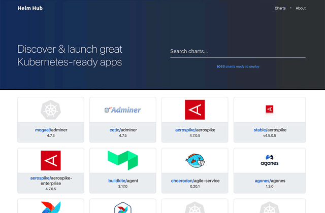

- 00 _导读 _ 什么是“The Fenix Project”？.md
- 00 开篇词 _ 如何构建一个可靠的分布式系统？.md
- 01 _ 原始分布式时代：Unix设计哲学下的服务探索.md
- 02 _ 单体系统时代：应用最广泛的架构风格.md
- 03 _ SOA时代：成功理论与失败实践.md
- 04 _ 微服务时代：SOA的革命者.md
- 05 _ 后微服务时代：跨越软件与硬件之间的界限.md
- 06 _ 无服务时代：“不分布式”云端系统的起点.md
- 07 _ 远程服务调用（上）：从本地方法到远程方法的桥梁.md
- 08 _ 远程服务调用（下）：如何选择适合自己的RPC框架？.md
- 09 _ RESTful服务（上）：从面向过程编程到面向资源编程.md
- 10 _ RESTful服务（下）：如何评价服务是否RESTful？.md
- 11 _ 本地事务如何实现原子性和持久性？.md
- 12 _ 本地事务如何实现隔离性？.md
- 13 _ 全局事务和共享事务是如何实现的？.md
- 14 _ 分布式事务之可靠消息队列.md
- 15 _ 分布式事务之TCC与SAGA.md
- 16 _ 域名解析系统，优化HTTP性能的第一步.md
- 17 _ 客户端缓存是如何帮助服务器分担流量的？.md
- 18 _ 传输链路，优化HTTP传输速度的小技巧.md
- 19 _ 如何利用内容分发网络来提高网络性能？.md
- 20 _ 常见的四层负载均衡的工作模式是怎样的？.md
- 21 _ 服务端缓存的三种属性.md
- 22 _ 分布式缓存如何与本地缓存配合，提高系统性能？.md
- 23 _ 认证：系统如何正确分辨操作用户的真实身份？.md
- 24 _ 授权（上）：系统如何确保授权的过程可靠？.md
- 25 _ 授权（下）：系统如何确保授权的结果可控？.md
- 26 _ 凭证：系统如何保证与用户之间的承诺是准确完整且不可抵赖的？.md
- 27 _ 保密：系统如何保证敏感数据无法被内外部人员窃取滥用？.md
- 28 _ 传输（上）：传输安全的基础，摘要、加密与签名.md
- 29 _ 传输（下）：数字证书与传输安全层.md
- 30 _ 验证：系统如何确保提交给服务的数据是安全的？.md
- 31 _ 分布式共识（上）：想用好分布式框架，先学会Paxos算法吧.md
- 32 _ 分布式共识（下）：Multi Paxos、Raft与Gossip，分布式领域的基石.md
- 33 _ 服务发现如何做到持续维护服务地址在动态运维中的时效性？.md
- 34 _ 路由凭什么作为微服务网关的基础职能？.md
- 35 _ 如何在客户端实现服务的负载均衡？.md
- 36 _ 面对程序故障，我们该做些什么？.md
- 37 _ 要实现某种容错策略，我们该怎么做？.md
- 38 _ 限流的目标与模式.md
- 39 _ 如何构建零信任网络安全？.md
- 40 _ 如何实现零信任网络下安全的服务访问？.md
- 41 _ 分布式架构中的可观测到底说的是什么？.md
- 42 _ 分析日志真的没那么简单.md
- 43 _ 一个完整的分布式追踪系统是什么样子的？.md
- 44 _ 聚合度量能给我们解决什么问题？.md
- 45 _ 模块导学：从微服务到云原生.md
- 46 _ 容器的崛起（上）：文件、访问、资源的隔离.md
- 47 _ 容器的崛起（下）：系统、应用、集群的封装.md
- 48 _ 以容器构建系统（上）：隔离与协作.md
- 49 _ 以容器构建系统（下）：韧性与弹性.md
- 50 _ 应用为中心的封装（上）：Kustomize与Helm.md
- 51 _ 应用为中心的封装（下）：Operator与OAM.md
- 52 _ Linux网络虚拟化（上）：信息是如何通过网络传输被另一个程序接收到的？.md
- 53 _ Linux网络虚拟化（下）：Docker所提供的容器通讯方案有哪些？.md
- 54 _ 容器网络与生态：与CNM竞争过后的CNI下的网络插件生态.md
- 55 _ 谈谈Kubernetes的存储设计理念.md
- 56 _ Kubernetes存储扩展架构：一个真实的存储系统如何接入或移除新存储设备？.md
- 57 _ Kubernetes存储生态系统：几种有代表性的CSI存储插件的实现.md
- 58 _ Kubernetes的资源模型与调度器设计.md
- 59 _ 透明通讯的涅槃（上）：通讯的成本.md
- 60 _ 透明通讯的涅槃（下）：控制平面与数据平面.md
- 61 _ 服务网格与生态：聊聊服务网格的两项标准规范.md
- 63 _ 基于Spring Boot的单体架构.md
- 64 _ 基于Spring Cloud的微服务架构.md
- 65 _ 基于Kubernetes的微服务架构.md
- 66 _ 基于Istio的服务网格架构.md
- 67 _ 基于云计算的无服务架构.md
- 春节特别放送（上）_ 有的放矢，事半功倍.md
- 春节特别放送（下）_ 积累沉淀，知行合一.md
- 用户故事 _ 詹应达：持续成长，不惧未来.md
- 结束语 _ 程序员之路.md
- 结课测试 _ 一套习题，测出你的掌握程度.md
50 _ 应用为中心的封装（上）：Kustomize与Helm
你好，我是周志明。
在理解了前面几节课所讲的容器技术发展的历程之后，不知你会不会有种“套娃式”的迷惑感？
- 现在你已经知道，容器的崛起缘于chroot、namespaces、cgroups等内核提供的隔离能力，而系统级的虚拟化技术，使得同一台机器上互不干扰地运行多个服务成为了可能；
- 为了降低用户使用内核隔离能力的门槛，随后出现了LXC，它是namespaces、cgroups特性的上层封装，这就让“容器”一词真正走出了实验室，开始走入工业界进行实际应用；
- 然后，为了实现跨机器的软件绿色部署，出现了Docker，它（最初）是LXC的上层封装，彻底改变了软件打包分发的方式，迅速被大量企业广泛采用；
- 而为了满足大型系统对服务集群化的需要，又出现了Kubernetes，它（最初）是Docker的上层封装，从而使得以多个容器共同协作构建出健壮的分布式系统，成为了今天云原生时代的技术基础设施。
那这样你的疑惑可能也就出现了：Kubernetes会是容器化崛起之路的终点线吗？它达到了人们对云原生时代技术基础设施的期望了吗？
首先，从能力角度来看，可以说是的。Kubernetes被誉为云原生时代的操作系统，自诞生之日起它就因为出色的管理能力、扩展性和以声明代替命令的交互理念，收获了无数喝彩声。
但是，从易用角度来看，坦白说差距还非常大。云原生基础设施的其中一个重要目标，是接管掉业务系统复杂的非功能特性，这会让业务研发与运维工作变得足够简单，不受分布式的牵绊。然而，Kubernetes被诟病得最多的就是复杂，它从诞生之日起，就因为陡峭的学习曲线而出名。
我举个具体例子吧。如果要用Kubernetes部署一套Spring Cloud版的Fenix’s Bookstore，你需要分别部署一个到多个的配置中心、注册中心、服务网关、安全认证、用户服务、商品服务、交易服务，然后要对每个微服务都配置好相应的Kubernetes工作负载与服务访问，为每一个微服务的Deployment、ConfigMap、StatefulSet、HPA、Service、ServiceAccount、Ingress等资源都编写好元数据配置。
这个过程最难的地方不仅在于繁琐，还在于要想写出合适的元数据描述文件，你既需要懂开发（网关中服务调用关系、使用容器的镜像版本、运行依赖的环境变量等等这些参数，只有开发最清楚），又需要懂运维（要部署多少个服务、配置何种扩容缩容策略、数据库的密钥文件地址等等，只有运维最清楚），有时候还需要懂平台（需要什么样的调度策略、如何管理集群资源，通常只有平台组、中间件组或者核心系统组的同学才会关心），一般企业根本找不到合适的角色来为它管理、部署和维护应用。
这个事儿Kubernetes心里其实也挺委屈，因为以上提到的复杂性不能说是Kubernetes带来的，而是分布式架构本身的原罪。
对于大规模的分布式集群来说，无论是最终用户部署应用，还是软件公司管理应用，都存在着像前面提到的这诸多痛点。这些困难的实质是源于Docker容器镜像封装了单个服务，而Kubernetes通过资源封装了服务集群，却没有一个载体真正封装整个应用，这就使得它会把原本属于应用内部的技术细节给圈禁起来，不暴露给最终用户、系统管理员和平台维护者，而让使用者去埋单。
那么如此所造成的应用难以管理的矛盾，就在于封装应用的方法没能将开发、运维、平台等各种角色的关注点恰当地分离。
但是，既然在微服务时代，应用的形式已经不再局限于单个进程，那就也该到了重新定义“以应用为中心的封装”这句话的时候了。至于具体怎样的封装才算是正确的，其实到今天也还没有特别权威的结论，不过经过人们的尝试探索，已经能够窥见未来容器应用的一些雏形了。
所以接下来，我会花两节课的时间，给你介绍一下最近几年容器封装的两种主流思路，你可以从中理解容器“以应用为中心的封装”这个理念在不同阶段的内涵变化，这也是对“应用”这个概念的不断扩展升华的过程。
今天这节课呢，我们就先来了解下Kustomize和Helm，它们是封装“无状态应用”的典型代表。
额外知识：无状态应用与有状态应用的区别- 无状态应用（Stateless Application）与有状态应用（Stateful Application）说的是应用程序是否要自己持有其运行所需的数据，如果程序每次运行都跟首次运行一样，不依赖之前任何操作所遗留下来的痕迹，那它就是无状态的；反之，如果程序推倒重来之后，用户能察觉到该应用已经发生变化，那它就是有状态的。- 下一讲要介绍的Operator与OAM就是支持有状态应用的封装方式，这里你可以先了解一下。
Kustomize
最初，由Kubernetes官方给出的“如何封装应用”的解决方案是“用配置文件来配置文件”，这不是绕口令，你可以把它理解为是一种针对YAML的模版引擎的变体。
Kubernetes官方认为，应用就是一组具有相同目标的Kubernetes资源的集合，如果逐一管理、部署每项资源元数据太麻烦啰嗦的话，那就提供一种便捷的方式，把应用中不变的信息与易变的信息分离开，以此解决管理问题；把应用所有涉及的资源自动生成一个多合一（All-in-One）的整合包，以此解决部署问题。
而完成这项工作的工具就叫做Kustomize，它原本只是一个独立的小程序，从Kubernetes 1.14起，被纳入了kubectl命令之中，成为随着Kubernetes提供的内置功能。Kustomize使用Kustomization文件来组织与应用相关的所有资源，Kustomization本身也是一个以YAML格式编写的配置文件，里面定义了构成应用的全部资源，以及资源中需根据情况被覆盖的变量值。
Kustomize的主要价值是根据环境来生成不同的部署配置。只要建立多个Kustomization文件，开发人员就能以基于基准进行派生（Base and Overlay）的方式，对不同的模式（比如生产模式、调试模式）、不同的项目（同一个产品对不同客户的客制化）定制出不同的资源整合包。
在配置文件里，无论是开发关心的信息，还是运维关心的信息，只要是在元数据中有描述的内容，最初都是由开发人员来编写的，然后在编译期间由负责CI/CD的产品人员针对项目进行定制。最后在部署期间，由运维人员通过kubectl的补丁（Patch）机制更改其中需要运维去关注的属性，比如构造一个补丁来增加Deployment的副本个数，构造另外一个补丁来设置Pod的内存限制，等等。
k8s
├── base
│ ├── deployment.yaml
│ ├── kustomization.yaml
│ └── service.yaml
└── overlays
└── prod
│ ├── load-loadbalancer-service.yaml
│ └── kustomization.yaml
└── debug
└── kustomization.yaml
从上面这段目录结构中，我们可以观察到一个由kustomize管理的应用结构，它主要由base和overlays组成。Kustomize使用Base、Overlay和Patch生成最终配置文件的思路，与Docker中分层镜像的思路有些相似，这样的方式既规避了以“字符替换”对资源元数据文件的入侵，也不需要用户学习额外的DSL语法（比如Lua）。
从效果来看，使用由Kustomize编译生成的All-in-One整合包来部署应用是相当方便的，只要一行命令就能够把应用涉及的所有服务一次安装好，在“探索与实践”小章节中会介绍的Kubernetes版本和Istio版本的Fenix’s Booktstore，都使用了这种方式来发布应用，你也不妨实际体验一下。
但是，毕竟Kustomize只是一个“小工具”性质的辅助功能，对于开发人员来说，Kustomize只能简化产品针对不同情况的重复配置，它其实并没有真正解决应用管理复杂的问题，要做的事、要写的配置，最终都没有减少，只是不用反复去写罢了；而对于运维人员来说，应用维护不仅仅只是部署那一下，应用的整个生命周期，除了安装外还有更新、回滚、卸载、多版本、多实例、依赖项维护等诸多问题，都很麻烦。
所以说，要想真正解决这些问题，还需要更加强大的管理工具，比如下面我要介绍的主角Helm。不过Kustomize能够以极小的成本，在一定程度上分离了开发和运维的工作，不用像Helm那样需要一套独立的体系来管理应用，这种轻量便捷，本身也是一种可贵的价值。
OK，下面我们就来具体讲讲Helm。
Helm与Chart
Helm是由Deis公司开发的一种更具系统性的管理和封装应用的解决方案，它参考了各大Linux发行版管理应用的思路，应用格式是Chart。
Helm一开始的目标就很明确：如果说Kubernetes是云原生操作系统的话，那Helm就要成为这个操作系统上面的应用商店与包管理工具。
我相信，Linux下的包管理工具和封装格式，如Debian系的apt-get命令与dpkg格式、RHEL系的yum命令与rpm格式，你肯定不会陌生。有了包管理工具，你只要知道应用的名称，就可以很方便地从应用仓库中下载、安装、升级、部署、卸载、回滚程序，而且包管理工具掌握着应用的依赖信息和版本变更情况，具备完整的自管理能力，每个应用需要依赖哪些前置的第三方库，在安装的时候都会一并处理好。
Helm模拟的就是这种做法，它提出了与Linux包管理直接对应的Chart格式和Repository应用仓库，另外针对Kubernetes中特有的一个应用经常要部署多个版本的特点，也提出了Release的专有概念。
Chart用于封装Kubernetes应用涉及到的所有资源，通常是以目录内的文件集合的形式存在的。目录名称就是Chart的名称（没有版本信息），比如官方仓库中WordPress Chart的目录结构是这样的：
WordPress
├── templates
│ ├── NOTES.txt
│ ├── deployment.yaml
│ ├── externaldb-secrets.yaml
│ └── 版面原因省略其他资源文件
│ └── ingress.yaml
└── Chart.yaml
└── requirements.yaml
└── values.yaml
其中有几个固定的配置文件：Chart.yaml给出了应用自身的详细信息（名称、版本、许可证、自述、说明、图标，等等），requirements.yaml给出了应用的依赖关系，依赖项指向的是另一个应用的坐标（名称、版本、Repository地址），values.yaml给出了所有可配置项目的预定义值。
可配置项就是指需要部署期间由运维人员调整的那些参数，它们以花括号包裹在templates目录下的资源文件中。当部署应用时，Helm会先将管理员设置的值覆盖到values.yaml的默认值上，然后以字符串替换的形式，传递给templates目录的资源模版，最后生成要部署到Kubernetes的资源文件。
由于Chart封装了足够丰富的信息，所以Helm除了支持命令行操作外，也能很容易地根据这些信息自动生成图形化的应用安装、参数设置界面。
我们再来说说Repository仓库。它主要是用于实现Chart的搜索与下载服务，Helm社区维护了公开的Stable和Incubator的中央仓库（界面如下图所示），也支持其他人或组织搭建私有仓库和公共仓库，并能够通过Hub服务，把不同个人或组织搭建的公共仓库聚合起来，形成更大型的分布式应用仓库，这也有利于Chart的查找与共享。

所以整体来说，Helm提供了应用全生命周期、版本、依赖项的管理能力，同时，Helm还支持额外的扩展插件，能够加入CI/CD或者其他方面的辅助功能。
如此一来，它的定位就已经从单纯的工具升级到应用管理平台了，强大的功能让Helm收到了不少支持，有很多应用主动入驻到官方的仓库中。而从2018年起，Helm项目被托管到CNFC，成为其中的一个孵化项目。
总而言之，Helm通过模仿Linux包管理器的思路去管理Kubernetes应用，在一定程度上确实是可行的。不过，在Linux与Kubernetes中部署应用还是存在一些差别，最重要的一点是在Linux中99%的应用都只会安装一份，而Kubernetes里为了保证可用性，同一个应用部署多份副本才是常规操作。
所以，Helm为了支持对同一个Chart包进行多次部署，每次安装应用都会产生一个Release，Release就相当于该Chart的安装实例。对于无状态的服务来说，靠着不同的Release就已经足够支持多个服务并行工作了，但对于有状态的服务来说，服务会与特定资源或者服务产生依赖关系，比如要部署数据库，通常要依赖特定的存储来保存持久化数据，这样事情就变得复杂起来了。
既然Helm无法很好地管理这种有状态的依赖关系，那么这一类问题就是Operator要解决的痛点了。这也是我在下一节课要给你重点介绍的工具。
小结
今天，我给你介绍了两种比较常用，也较为具体的应用封装方式，分别是Kubernetes官方推出的Kustomize，以及目前在Kubernetes上较为主流的“应用商店”格式Helm与Chart。这样的封装对于无状态应用已经足够了，但对于有状态应用来说，仍然不能满足需要。
在下节课，我们将继续应用封装这个话题，一起来探讨如何为有状态应用提供支持。
一课一思
你是否尝试过在Kubernetes中部署一些需共享状态的集群应用？比如Etcd、Easticsearch等等？你是自己编写YAML，定义它们所需的各种资源的吗？
欢迎在留言区分享你的答案。如果你觉得有收获，也欢迎把今天的内容分享给更多的朋友。感谢你的阅读，我们下一讲再见。
© 2019 - 2023 Liangliang Lee. Powered by gin and hexo-theme-book.